Operación de Conducción
Driving Operation
Ajuste del Asiento
Operación
Introducción
Ajuste del asiento del conductor con el interruptor del asiento
• Interruptor del asiento
Puede ajustar los asientos por los siguientes medios:
• Interfaz de configuración de la pantalla de control central
• Voz de Xpeng
Consejos
• Si funciones como la memoria del asiento, la aproximación del asiento, la posición del asiento o el ajuste desde la pantalla central no se utilizan correctamente, se puede intentar una operación de inicialización.
• La Small P por voz no puede ajustar el respaldo del asiento trasero.
1. Interruptor de ajuste del asiento o del cojín
• Ajuste horizontal del asiento: Mueva el interruptor hacia adelante o hacia atrás.
• Ajuste vertical del asiento: Empuje la parte trasera del interruptor hacia arriba o hacia abajo.
• Ajuste de la altura del cojín: Mueva la parte delantera del interruptor hacia arriba o hacia abajo.
- Interruptor de ajuste del soporte lumbar
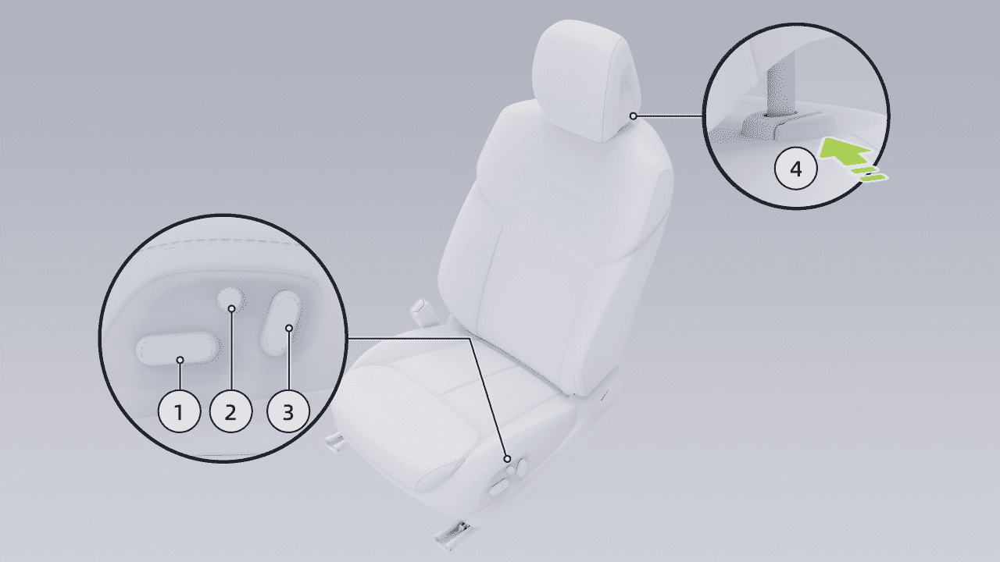
Driving Operation
• Ajuste la altura de elevación del soporte lumbar: Accione el interruptor hacia arriba o hacia abajo.
• Extracción del reposacabezas: Presione el interruptor y tire de él hacia arriba para retirar el reposacabezas.
• Ajuste la posición hacia adelante y hacia atrás del soporte lumbar: Accione el interruptor hacia adelante o hacia atrás.
Consejos
• En la interfaz de ajuste del asiento del conductor de la pantalla de control central, después de activar la función "Ajuste del Soporte Lumbar del Volante", puede usar la rueda de desplazamiento izquierda para ajustar la altura del soporte lumbar, y la rueda de desplazamiento derecha para mover el soporte lumbar hacia adelante y hacia atrás.
• El reposacabezas emite un sonido de "clic", lo que indica que el reposacabezas está bloqueado en su lugar.
• La posición más baja del reposacabezas no es su posición de uso; eleve siempre el reposacabezas hasta la posición de bloqueo al utilizarlo.
- Interruptor de ajuste del ángulo del respaldo
• Ajuste el ángulo del respaldo: Empuje la parte superior del interruptor hacia adelante/hacia atrás.
- Interruptor de liberación del reposacabezas
• Ajuste de la altura del reposacabezas: Empuje el reposacabezas hacia arriba para elevarlo; mantenga presionado el interruptor para bajar el reposacabezas.
Driving Operation
Ajuste del asiento del pasajero delantero con el interruptor del asiento
- Interruptor de ajuste del asiento
• Ajuste horizontal del asiento: Mueva el interruptor hacia adelante o hacia atrás.
• Ajuste vertical del asiento: Empuje la parte trasera del interruptor hacia arriba o hacia abajo.
- Interruptor de liberación del reposacabezas
• Ajuste de la altura del reposacabezas: Empuje el reposacabezas hacia arriba para elevarlo; mantenga presionado el interruptor para bajar el reposacabezas.
• Extracción del reposacabezas: Presione el interruptor y tire de él hacia arriba para retirar el reposacabezas.
1. Interruptor de ajuste del ángulo del respaldo
• Ajuste el ángulo del respaldo: Empuje la parte superior del interruptor hacia adelante/hacia atrás.
• El reposacabezas emite un sonido de "clic", lo que indica que el reposacabezas está bloqueado en su lugar.
Consejos
- Interruptor de ajuste del soporte lumbar
• Ajuste la posición hacia arriba del soporte lumbar accionando el interruptor hacia arriba o hacia abajo.
• La posición más baja del reposacabezas no es su posición de uso; eleve siempre el reposacabezas hasta la posición de bloqueo al utilizarlo.
• Ajuste la altura de elevación del soporte lumbar accionando el interruptor hacia adelante o hacia atrás.
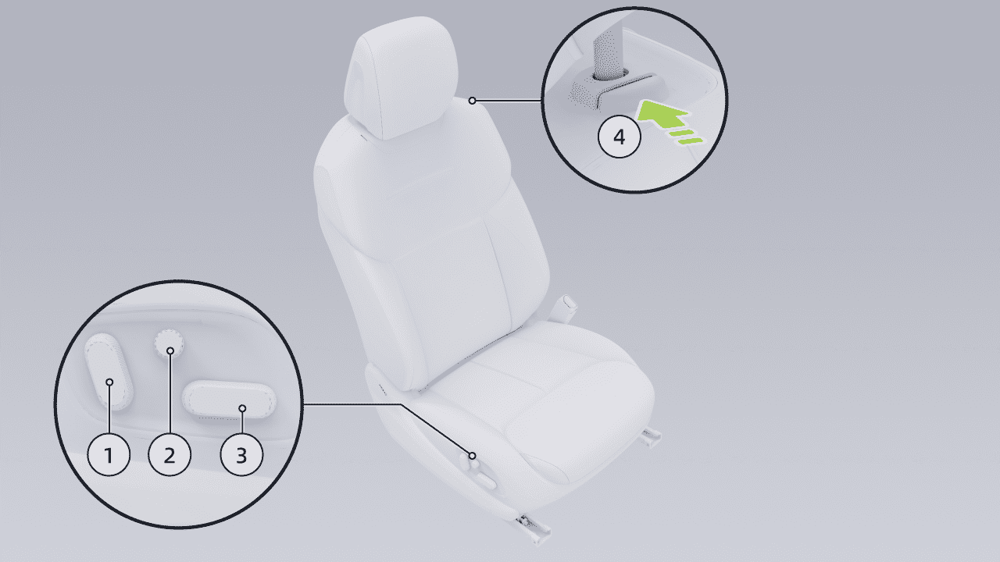
Operación de conducción
Ajuste de la altura del reposacabezas del asiento trasero
Plegado del respaldo del asiento trasero
Ajuste de la altura del reposacabezas: empuje el reposacabezas hacia arriba para elevarlo; mantenga presionado el interruptor del reposacabezas para bajarlo.
1. Tire hacia adelante de la manija de desbloqueo del respaldo.
- Pliegue el respaldo del asiento hacia adelante.
El reposacabezas emite un sonido de "clic", lo que indica que el reposacabezas está bloqueado en su posición.
Consejos
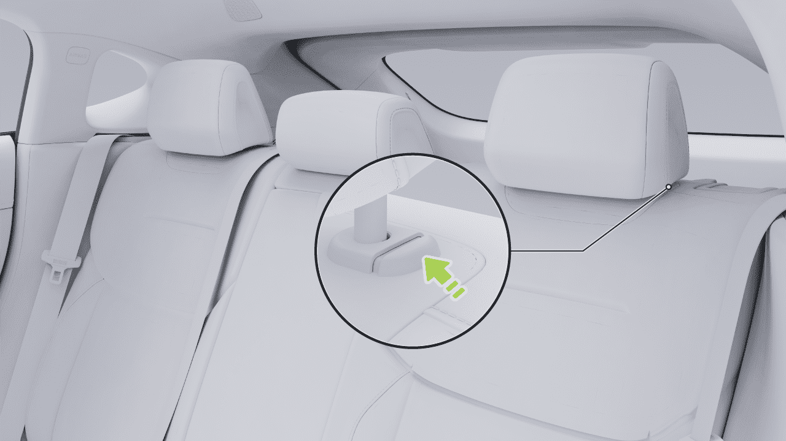
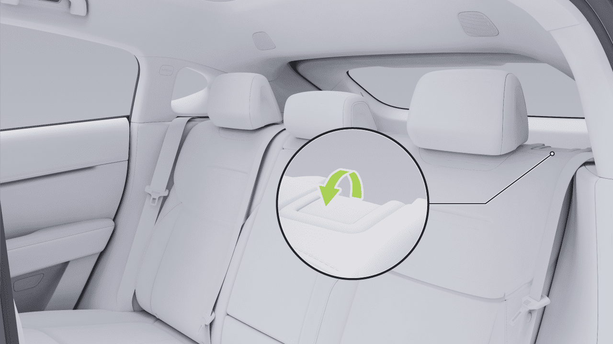
Operación de conducción
Ajuste del ángulo del asiento trasero
- Para volver a colocar el respaldo del asiento, tire del cinturón de seguridad, levante el respaldo hacia arriba y luego empújelo hacia atrás para bloquearlo en su posición.
Ambos lados del cojín del asiento trasero están equipados con manijas para ajustar el respaldo del asiento; tire de ellas hacia arriba para modificar el ángulo del respaldo.
precaución
Cuando el respaldo esté bajado, retire los objetos de los asientos traseros para evitar interferir con el efecto de reclinación.
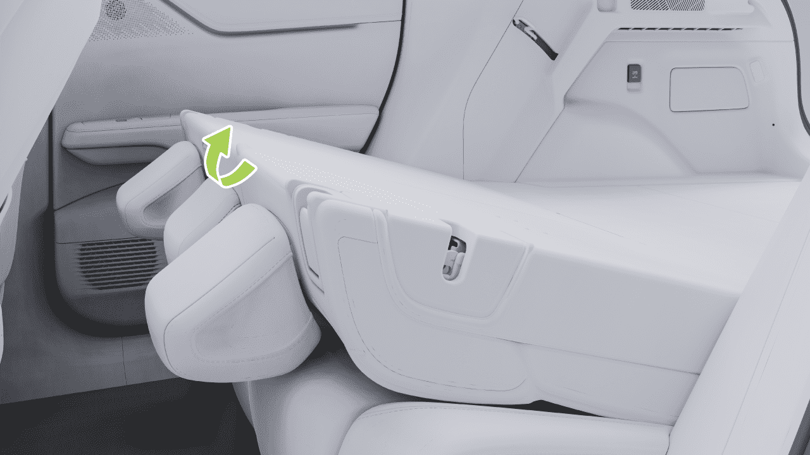
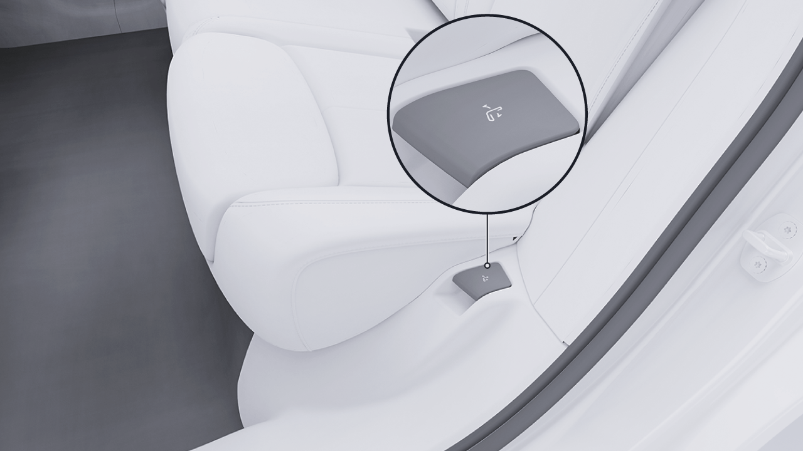
Operación de conducción
Ajuste del asiento delantero mediante la pantalla de control central
- Toque para recuperar la posición de memoria del asiento seleccionado.
Consejos
• Aquí se utiliza el asiento del conductor principal y, al hacer clic, se recupera la posición de memoria del asiento del conductor principal y del espejo retrovisor.
• Cuando se selecciona un asiento que no es el principal, una pulsación prolongada cambia el nombre de la posición de memoria.
Memoria de posición del asiento
1. Seleccione el asiento del conductor o del acompañante delantero en la interfaz de Ajuste del Asiento de la pantalla de control central.
En la pantalla de control central, vaya a la interfaz " →Asiento→Ajuste", y podrá ajustar la posición del asiento.
- Ajuste el asiento a una posición adecuada.
1. Toque " " para seleccionar el asiento que se va a ajustar.
-
Guarde según las indicaciones de la pantalla de control central.
-
Toque para acceder a la interfaz de ajuste del asiento seleccionado.
Inicialización del asiento
- Después de iniciar sesión, acceda a la interfaz de gestión de Hábitos de Conducción para agregar Hábitos de Conducción o cambiar el nombre de los hábitos.
Inicialización del asiento delantero
Si la funcionalidad del asiento es anormal (p. ej., el asiento no se puede ajustar mediante los botones, el control central

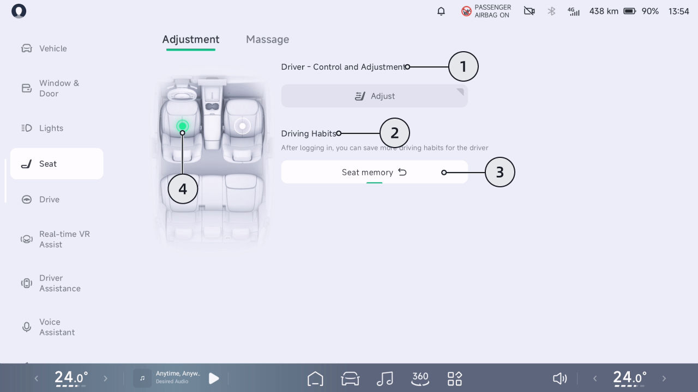

Operación de conducción
de la pantalla, o el comando de voz), puede intentar inicializar manualmente el asiento antes de usarlo.
• No coloque los dedos ni otras partes del cuerpo debajo del asiento, ya que esto podría causar daños al asiento.
1. Empuje hacia adelante el interruptor de ajuste del ángulo del respaldo para mover el respaldo del asiento a su posición más adelantada. Mantenga presionado el interruptor durante 1 segundo antes de soltarlo.
• No ajuste el asiento principal mientras el vehículo esté en movimiento, ya que ajustar el asiento desviará de la posición de conducción correcta y puede provocar lesiones o la muerte.
- Empuje hacia adelante nuevamente el interruptor de ajuste del ángulo del respaldo en un plazo de 5 segundos, manténgalo presionado durante 7 segundos y luego suéltelo. El asiento iniciará automáticamente el proceso de inicialización.
• No ajuste el asiento con el cinturón de seguridad abrochado, para evitar que el cinturón de seguridad quede fuera de su uso normal, lesiones a los ocupantes y pérdida de protección.
- Espere hasta que el asiento se detenga por completo antes de utilizarlo.
Advertencias, precauciones y limitaciones
No coloque alfombrillas de piso demasiado gruesas u otros objetos extraños (como botellas de bebidas, bolsas de carbón, etc.) en la parte inferior del asiento del conductor/acompañante, ya que pueden quedar atrapados entre el asiento y los rieles guía, impidiendo el ajuste del asiento. Bloqueo, lo que daña el asiento. Se recomienda utilizar alfombrillas aprobadas oficialmente por XPENG Motors.
precaución
advertencia
• Se debe tener cuidado al ajustar el asiento para garantizar que el asiento se mueva sin lesionar a otros ocupantes.
• El reposacabezas no está en uso cuando se encuentra en la posición más baja y no debe ajustarse a esta posición cuando hay un ocupante en el vehículo.
Operación de conducción
Espejos laterales
• En el CID, haga clic en " →Conducción→Espejos laterales exteriores"。
Introducción
Ajuste del ángulo del espejo exterior
El espejo lateral ofrece las siguientes funciones de ajuste:
• Ajustar el ángulo del espejo lateral mediante los botones del volante
• Memoria para la posición del espejo lateral
• Desplegar o plegar los espejos laterales
• Inclinación automática hacia abajo al dar marcha atrás
Operación
• Plegado automático del espejo cuando está bloqueado
Acceder a la interfaz de ajuste del espejo lateral exterior
Después de acceder a la interfaz de ajuste del espejo retrovisor exterior, el ángulo del espejo retrovisor exterior se puede ajustar mediante los rodillos y los botones izquierdo y derecho a ambos lados del volante.
Puede acceder a la interfaz de ajuste del espejo retrovisor exterior de cualquiera de las siguientes maneras:
• Asistente de voz
• Interfaz del CID
• La barra de tareas en la parte inferior del CID (si está configurada)

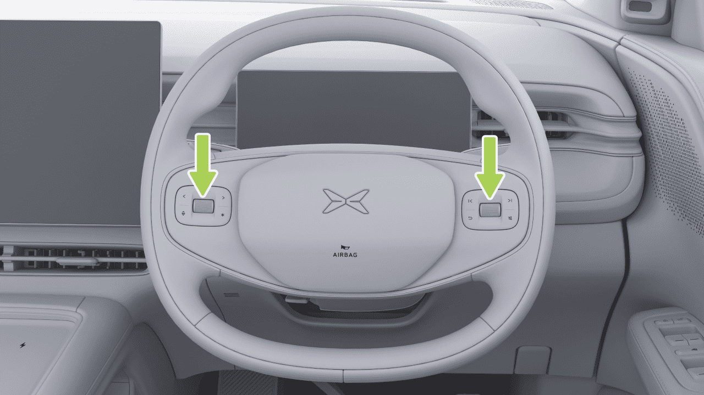
Operación de conducción
advertencia
En la interfaz de ajuste del espejo retrovisor exterior, puede activar/desactivar las funciones "Inclinar hacia abajo el espejo lateral izquierdo al dar marcha atrás"、 "Inclinar hacia abajo el espejo lateral derecho al dar marcha atrás".
• Está prohibido ajustar los espejos retrovisores exteriores mientras el vehículo está en movimiento para evitar accidentes.
• Nunca presione manualmente los espejos exteriores para ajustar el ángulo de inclinación.
Después de activar la función, cuando el vehículo está en marcha R, el espejo retrovisor exterior del lado correspondiente (con la función de plegado automático preconfigurada) se inclinará automáticamente hacia abajo hasta un cierto ángulo para ayudar a dar marcha atrás.
• Está prohibido modificar los espejos retrovisores exteriores sin autorización.
Inclinar automáticamente hacia abajo el espejo retrovisor exterior al dar marcha atrás
Consejos
Después de que el espejo retrovisor se incline hacia abajo al dar marcha atrás, el ángulo del espejo retrovisor aún se puede ajustar mediante los rodillos a ambos lados del volante y los botones izquierdo y derecho en la interfaz de ajuste del espejo retrovisor exterior.
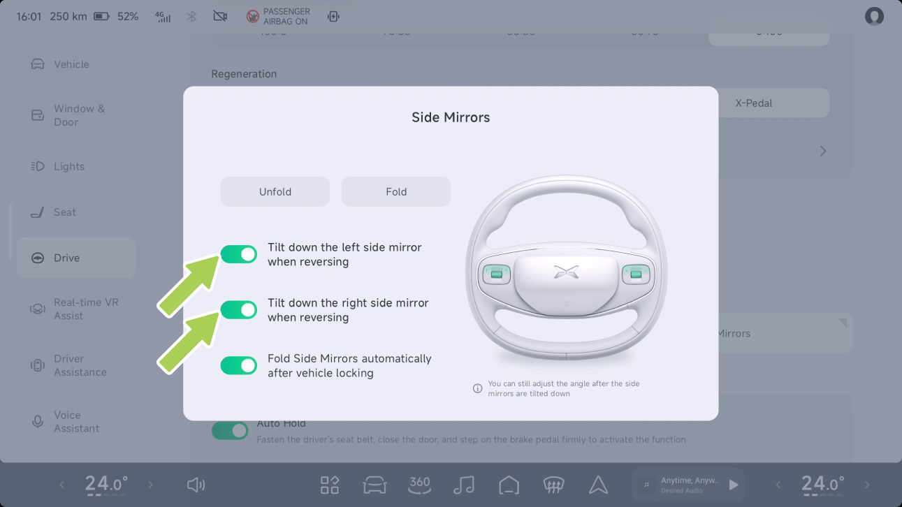
Operación de conducción
Desplegar/plegar el espejo exterior
desbloqueado y plegar cuando el vehículo está bloqueado.
advertencia
Al desplegar o plegar los espejos exteriores, tenga cuidado de no atraparse los dedos entre los espejos exteriores y la base del espejo.
Espejos exteriores calefaccionados
La función de calefacción de los espejos retrovisores exteriores se utiliza para calentar las lentes de los espejos retrovisores exteriores izquierdo y derecho, lo que permite secar rápidamente las manchas de agua o nieve en condiciones de lluvia y nieve, mejorando la seguridad de conducción. ，haga clic en “ ”para calentar los espejos exteriores.
1. Desplegar/plegar los espejos exteriores
• En la interfaz de ajuste de los espejos retrovisores exteriores, haga clic en “Plegar espejos exteriores”. Los espejos exteriores se pueden desplegar o plegar.
precaución
- Plegado automático al bloquear el vehículo
• En la interfaz de ajuste de los espejos exteriores, puede habilitar/deshabilitar la función de plegado automático de los espejos exteriores. Cuando esta función está habilitada, los espejos exteriores se despliegan automáticamente cuando el vehículo está
Cuando la función de calefacción de los espejos retrovisores exteriores está activada, no la toque con las manos para evitar quemaduras.
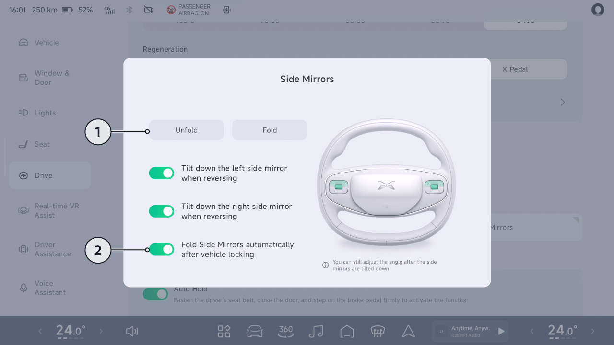
Operación de conducción
Advertencias, precauciones y limitaciones
1. Puede configurar la función de despliegue de los espejos laterales en la pantalla de control central mediante el siguiente método:
restablecimiento del espejo lateral
• En la interfaz de Ajuste del espejo lateral de la pantalla de control central, toque “Desplegar”.
• En el panel de accesos directos de la pantalla de control central, toque “Desplegar para desplegar los espejos retrovisores”.
• En la barra de tareas inferior de la pantalla de control central, toque “Despliegue del espejo retrovisor” (si está configurado).
Cuando los espejos exteriores están en estado plegado, pueden plegarse hacia adelante o de otra manera debido a un impacto accidental o un empuje manual, lo que se puede configurar en el CID.
Consejos
1. Plegado hacia adelante
-
Estado estándar
-
Plegado hacia atrás
Cuando el espejo lateral está en estado desplegado, el espejo lateral puede plegarse hacia adelante o hacia atrás debido a un impacto accidental o a un empuje manual. Se puede restaurar a la posición normal con las siguientes operaciones.
- Empuje manualmente el espejo retrovisor a la posición normal.
Consejos
Antes del restablecimiento manual, debe revisar la superficie de plegado en busca de objetos extraños como nieve y
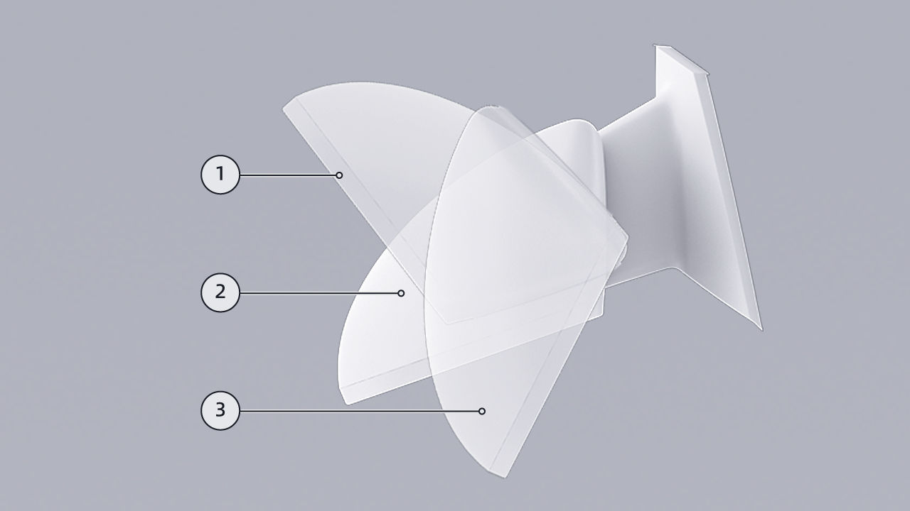
Operación de conducción
hielo, retire los objetos extraños antes de restablecer, de lo contrario puede dañar fácilmente la estructura de plegado del espejo exterior.
Operación
Palanca izquierda
Ajuste de luces
Introducción
• Palanca izquierda
Puede controlar las luces mediante los siguientes medios:
• Pantalla de control central
– Panel de accesos directos (solo admite el encendido o apagado automático de los faros)
• Voz de Xpeng
– Interfaz de configuración
• Señal de giro: Tire de la palanca hacia arriba o hacia abajo suavemente, y volverá a la posición original automáticamente después de soltarla. En este caso, la señal de giro del lado correspondiente parpadeará 3 veces.
Consejos
El Asistente de Voz de Xpeng no enciende las luces altas ni las señales de giro.
• Luz de giro: Empuje la palanca hacia arriba/abajo hasta el tope superior/inferior, luego suéltela, y volverá automáticamente a su posición original. La luz de giro del lado correspondiente parpadeará.
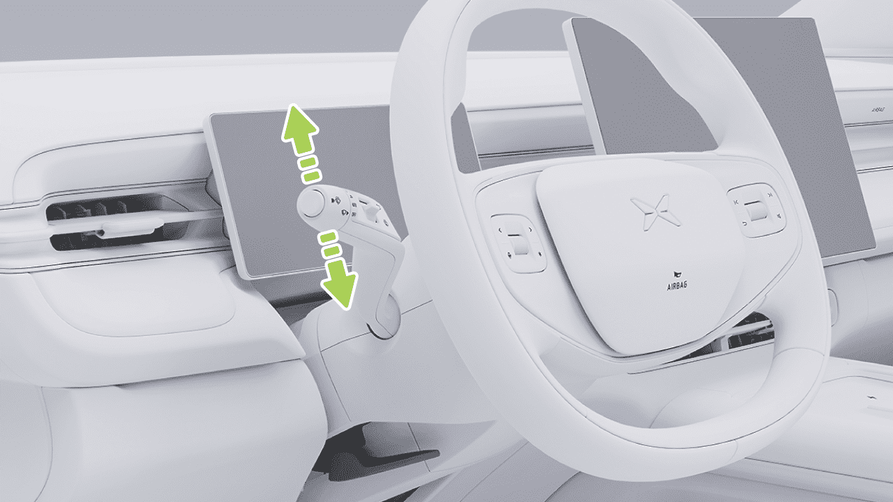
Operación de conducción
Empújela hasta la posición de luz de cambio de carril o deje que el volante regrese a su posición original para apagar la luz de giro.
• Luces de adelantamiento: Tire de la palanca hacia atrás de forma continua y suéltela, y las luces altas parpadearán.
Cuando se encienden las luces de giro, el indicador de giro correspondiente se muestra en el tablero de instrumentos, acompañado de un sonido de «clic».
Consejos
Por su seguridad y la de los demás, utilice las luces altas de forma adecuada.
precaución
Interfaz de configuración de la pantalla de control central
1. Altura del faro:
• Luces altas: Cuando las luces bajas están encendidas, tire de la palanca hacia adelante para encender las luces altas; empújela de nuevo para apagar las luces altas.
• La altura del faro se puede ajustar para adaptarse a la conducción y la carga del vehículo según la situación.
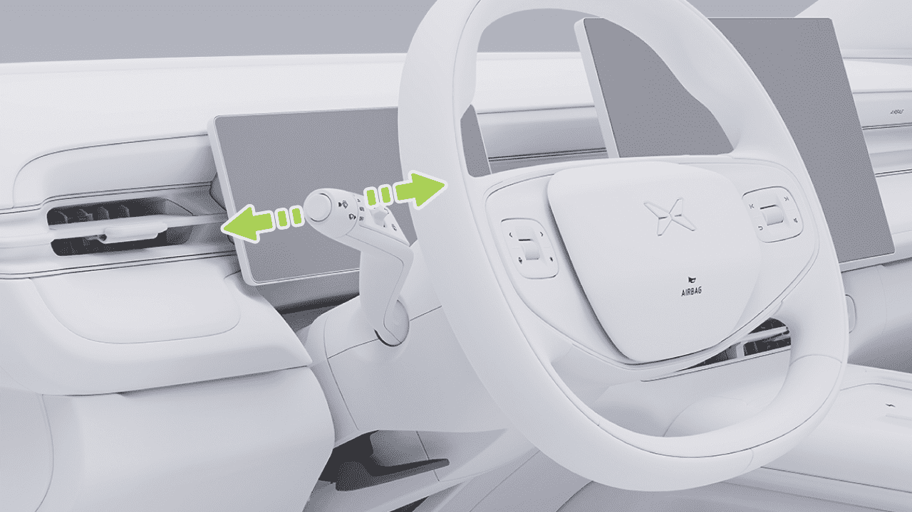
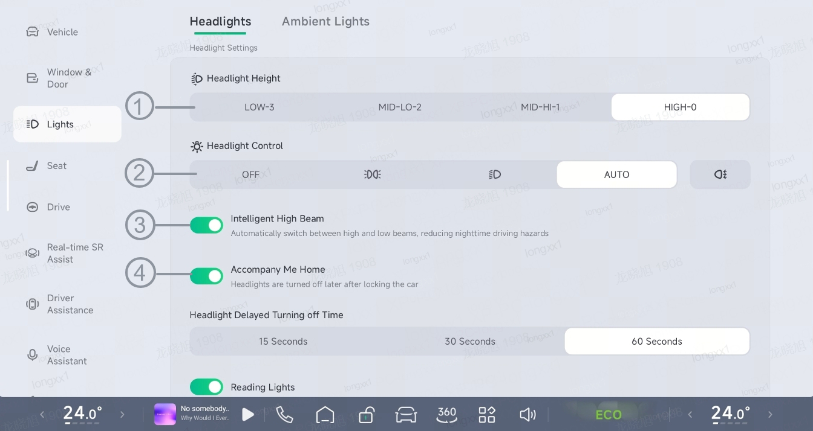
Operación de conducción
- Control de los faros:
no se iluminan, se encenderán simultáneamente.
• OFF: Toque para desactivar todas las luces exteriores.
• : Toque para encender o apagar la luz de posición y la luz de la matrícula.
- Luces altas inteligentes: Toque para encender o apagar las luces altas inteligentes.
• : Toque para encender o apagar la luz baja.
- Acompáñame a casa:
precaución
• Después de la activación, la función «Acompáñame a casa» se activará una vez que el vehículo esté bloqueado. Puede configurar que el faro se apague tras un retardo de «15 s», «30 s» y «60 s».
Cuando el vehículo se desplaza en un entorno oscuro, es necesario confirmar dos veces en la pantalla de control central para apagar la luz baja.
Advertencias, precauciones y limitaciones
• AUTO: Activa/desactiva automáticamente las luces altas y bajas según el brillo ambiental alrededor del vehículo.
La altura del faro adecuada para la conducción y el ajuste de la carga del vehículo se puede configurar según la situación, con la siguiente referencia.
Ajuste de la altura del faro
El panel de accesos directos del control central también puede encender/apagar los faros automáticos.
Consejos
Posición de altura del faro
Condición
• : Toque este botón para encender o apagar las luces antiniebla traseras. Si las luces bajas
Operación de conducción
Solo el conductor
puede producirse empañamiento dentro de la lámpara. Si hay una gran cantidad de gotas de agua o agua en la lámpara, comuníquese con el Centro de Servicio de Vehículos XPENG.
Máxima Solo el conductor y un pasajero delantero
Hay cinco personas en los asientos delanteros y traseros Más alta
Control del limpiaparabrisas
Cinco personas en los asientos delanteros y traseros, con equipaje en el maletero (dentro de los límites de carga máxima permitida por eje y peso máximo permitido del vehículo)
Introducción
El Conmutador Multifunción del Limpiaparabrisas puede controlar los limpiaparabrisas/luneta delanteros y traseros y los lavaparabrisas. El uso adecuado del limpiaparabrisas y el lavaparabrisas en distintas condiciones meteorológicas puede mejorar la visibilidad del conductor.
Relativamente bajo
Solo conductor, con equipaje en el maletero (dentro de los límites de la carga máxima admisible por eje y del peso máximo admisible del vehículo)
Más bajo
Es normal que, bajo ciertas condiciones de uso, como una elevada humedad del aire o el lavado del vehículo,
precaución
Operación de Conducción
Operación
En la pantalla de control central, vaya a la interfaz “ →Ventana y Puerta”, y podrá ajustar la sensibilidad del limpiaparabrisas automático.
• LO: Limpia a baja velocidad.
• HI: Limpia a alta velocidad.
- Conmutador del Limpialuneta Trasero
• Empujar hacia arriba: El limpialuneta trasero funciona/deja de limpiar.
• Tirar brevemente hacia abajo: Activa un ciclo del limpialuneta trasero.
1. Conmutador del lavaparabrisas
• Tirar prolongadamente hacia abajo: El lavaluneta trasero rocía mientras el limpialuneta trasero limpia.
• Pulsar: Limpia una vez.
• Mantener pulsado: El lavaparabrisas delantero rocía agua y el limpiaparabrisas delantero funciona.
Consejos
- Conmutador del limpiaparabrisas delantero
Accione el conmutador del limpialuneta trasero y, al soltarlo, el conmutador regresará automáticamente.
Puede activar o desactivar el limpiaparabrisas delantero girando el conmutador correspondiente.
• OFF: Detiene la limpieza.
• AUTO: Limpia en función de la lluvia.

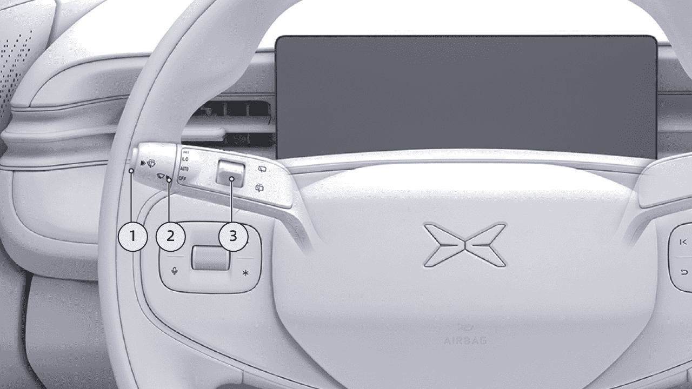
Operación de Conducción
precaución
advertencia
Al lavar con el limpialuneta trasero, cuando se suelta el conmutador, el limpialuneta trasero continuará barriendo 3 veces y una vez después de 10 s.
• Los limpiaparabrisas automáticos son una función auxiliar y el conductor aún debe ajustar manualmente los limpiaparabrisas si es necesario para conducir de forma segura.
Advertencias, Precauciones y Limitaciones
precaución
• No limpie en seco los limpiaparabrisas sin agua; si la lluvia es escasa, rocíe líquido lavaparabrisas antes de usar los limpiaparabrisas para evitar dañar el parabrisas y las escobillas.
• Antes de accionar la palanca del limpiaparabrisas, asegúrese de que la tapa del compartimento delantero, el maletero y la puerta principal estén completamente cerrados.
Control del Cambio de Marchas
• Al lavar el vehículo, apague los limpiaparabrisas automáticos para evitar daños en los limpiaparabrisas o lesiones personales.
Introducción
• Al usar los limpiaparabrisas en condiciones meteorológicas adversas, asegúrese de que las escobillas no estén congeladas/pegadas al parabrisas.
Cambie de marcha utilizando la palanca situada a la derecha del volante.
Operación
• Si hay nieve, residuos, etc. en los limpiaparabrisas o el parabrisas, retírelos antes de usarlos; estacione el vehículo en una zona segura y retírelos.
precaución
Cambie de marcha con el vehículo detenido.
Operación de Conducción
• Con el vehículo en la posición R, pise el pedal del freno y empuje la palanca de cambios hacia abajo una marcha y manténgala durante 1 s.
• Con el vehículo en la posición P, pise el pedal del freno y empuje la palanca de cambios hacia arriba o hacia abajo una marcha y manténgala durante 1 s.
D: Marcha (Drive)
Pise el pedal del freno y empuje la palanca de cambios hacia abajo dos marchas para cambiar a la posición D.
R: Marcha atrás (Reverse)
Presione el pedal del freno y empuje la palanca de cambios hacia arriba dos marchas al mismo tiempo para cambiar a la posición R, en cuyo caso se enciende la luz de marcha atrás.
N: Punto muerto
El vehículo puede cambiarse a la posición N mediante las siguientes operaciones:
• Con el vehículo en posición D, presione el pedal del freno y empuje la palanca de cambios hacia arriba una marcha y manténgala durante 1 s.
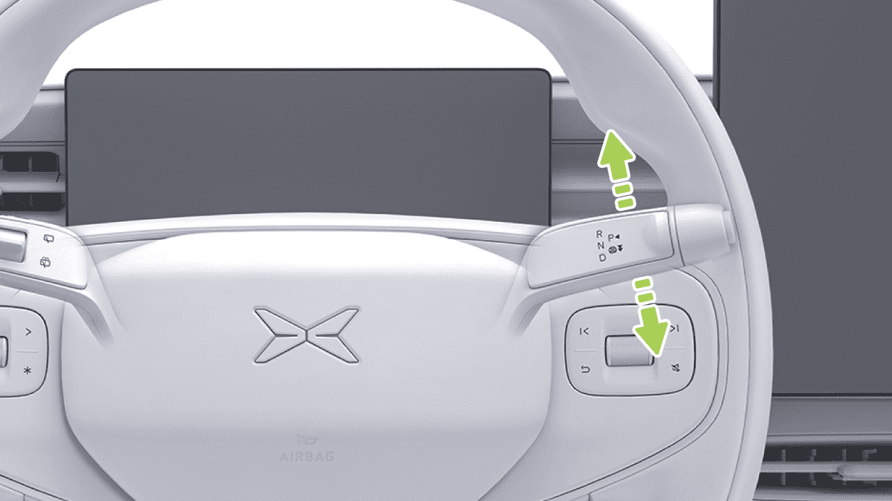
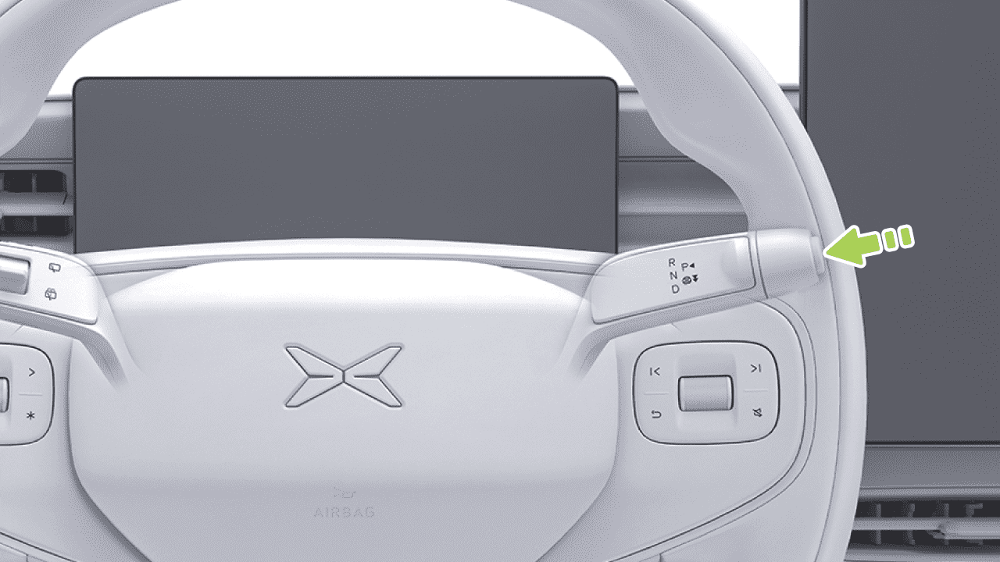
Operación de conducción
"P" - Estacionamiento:
Opere de acuerdo con la indicación y cambie de marcha después de que se cumplan las condiciones.
Presione el pedal del freno y presione el interruptor de posición P en la palanca de cambios para cambiar a la posición P.
Advertencias, precauciones y limitaciones
• En la pantalla de control central, vaya a la interfaz " →Ventana y puerta", donde puede activar o desactivar el "Acceso directo a la marcha P". Después de cambiar a la marcha P, puede ver las opciones de control comunes en la esquina inferior izquierda de la pantalla de control central. De esta manera, la operación con un solo toque es más cómoda.
Consejos
Con el vehículo en D o R y a una velocidad inferior a 3 km/h, sin el cinturón de seguridad puesto y sin presionar los pedales del freno y del acelerador, abra la puerta del conductor principal y el vehículo cambiará automáticamente a P.
precaución
• Después del cambio de marcha, el indicador de marcha correspondiente en el instrumento se pondrá negro.
• Antes de salir del vehículo o en una rampa, asegúrese de que el vehículo esté en P para evitar que el vehículo se mueva sin motivo.
• El vehículo cambiará a la posición P automáticamente cuando se abra la puerta del conductor con la palanca de cambios en posición D o R a una velocidad inferior a 3 km/h, sin los cinturones de seguridad abrochados y sin el pedal del freno ni el pedal del acelerador presionados.
• Si no puede cambiar de marcha correctamente, debe comunicarse con el Centro de Servicio de Automóviles XPENG para obtener asistencia.
• Cuando no se cumplen las condiciones para el cambio de marcha, el instrumento mostrará una indicación de texto.

Operación de conducción
Control de frenado
Operación
Introducción
Sensación del pedal del freno
Las siguientes funciones se pueden configurar para la operación de frenado:
• Sensación del pedal del freno
• AUTO HOLD
• Frenado confortable
• EPB
En la pantalla de control central, vaya a la interfaz " →Conducción", donde puede ajustar la "Sensación del pedal del freno".
Seleccione una sensación adecuada del pedal del freno según su preferencia personal.
• Confort: La respuesta de la fuerza de frenado es suave y la experiencia de conducción es más confortable.

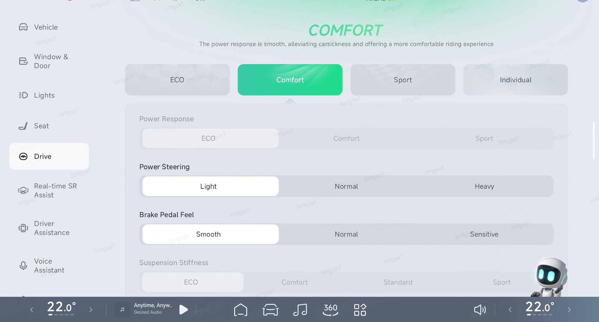
Operación de conducción
• Estándar: La respuesta de la fuerza de frenado es moderada, y también se garantizan el placer de conducción y la comodidad de marcha.
En la pantalla de control central, vaya a la interfaz " →Conducción", donde puede activar o desactivar "AutoHold".
La fuerza y el recorrido estándar del pedal son adecuados para la mayoría de los conductores.
Consejos
• Si necesita detener el vehículo durante un breve período, puede activar AUTO HOLD y soltar el pedal del freno. El sistema aplicará el freno automáticamente y mantendrá el vehículo inmóvil.
• Sport: La respuesta de la fuerza de frenado es rápida y el control de conducción es más flexible.
• Activación de la función: Después de que el vehículo se detenga, pise el pedal de freno con fuerza y el indicador del tablero se iluminará para activar el AUTO HOLD. En ese momento, suelte el pedal de freno.
AUTO HOLD
Consejos
El estacionamiento automático solo está activo cuando la puerta principal está cerrada, el cinturón de seguridad está abrochado y la marcha está en D/R/N.
• Desactivación de la función: Después de que el AUTO HOLD esté activado, pise el pedal del acelerador para desactivar el AUTO HOLD.


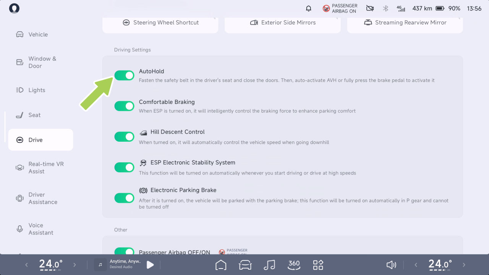
Operación de Conducción
Consejos
Frenado Confortable
• Cuando el estacionamiento automático está activo, al abrir la puerta principal o desabrochar el cinturón de seguridad cambia automáticamente al EPB.
• Después de un período de retención del estacionamiento automático, el sistema cambia al EPB.
El estacionamiento automático no puede anular la dinámica; active el estacionamiento automático según las condiciones de la vía.
precaución
En la pantalla de control central, vaya a la interfaz “ →Conducción” y podrá seleccionar habilitar o deshabilitar el “Frenado Confortable”.
• Una vez habilitado, el sistema controla de forma inteligente la fuerza de frenado en el extremo del freno, liberando automática y suavemente la presión de frenado para mejorar el confort de frenado del vehículo y reducir eficazmente el cabeceo por frenado.

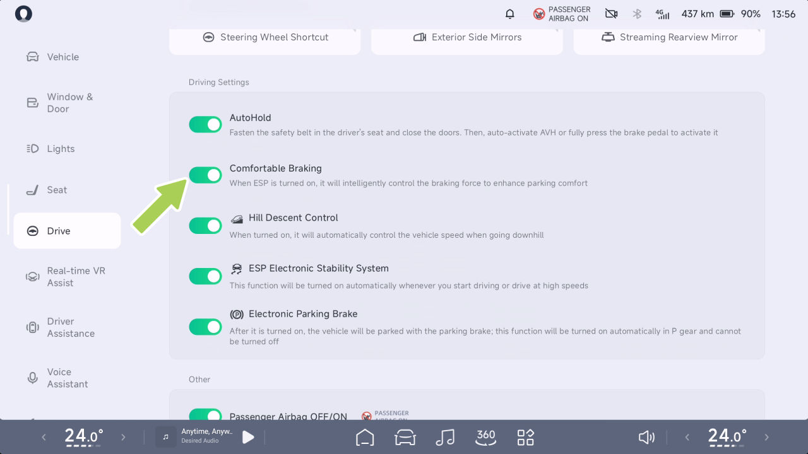
Operación de Conducción
EPB
marcha, y desactive el “Freno de Estacionamiento Electrónico”. En ese momento, el del tablero se apaga, indicando que el EPB se ha desactivado correctamente.
Consejos
• “”El EPB no se puede desactivar desactivando el freno de estacionamiento electrónico cuando el vehículo está en P.
• Es normal que el sistema haga un ruido de funcionamiento cuando el EPB se activa/desactiva.
• En casos excepcionales, una pulsación prolongada del interruptor P activa la función de frenado de emergencia del EPB.
En la pantalla de control central, vaya a la interfaz “ →Conducción” y podrá habilitar o deshabilitar el “Freno de Estacionamiento Electrónico” (EPB).
precaución
• Cuando el vehículo está detenido, active el “Freno de Estacionamiento Electrónico” o pulse el interruptor de posición P. El del tablero se iluminará, indicando que el EPB se ha activado correctamente.
• Si el vehículo no acciona/cierra el EPB correctamente, contacte de inmediato con su Centro de Servicio de Vehículos XPENG para su reparación.
• Cuando el vehículo está detenido, pise el pedal de freno, pise el pedal de freno, cambie a una marcha distinta de P
• Si el vehículo no puede encenderse debido a una batería descargada, el EPB no se puede desactivar; esto se puede solucionar cerrándolo después de un


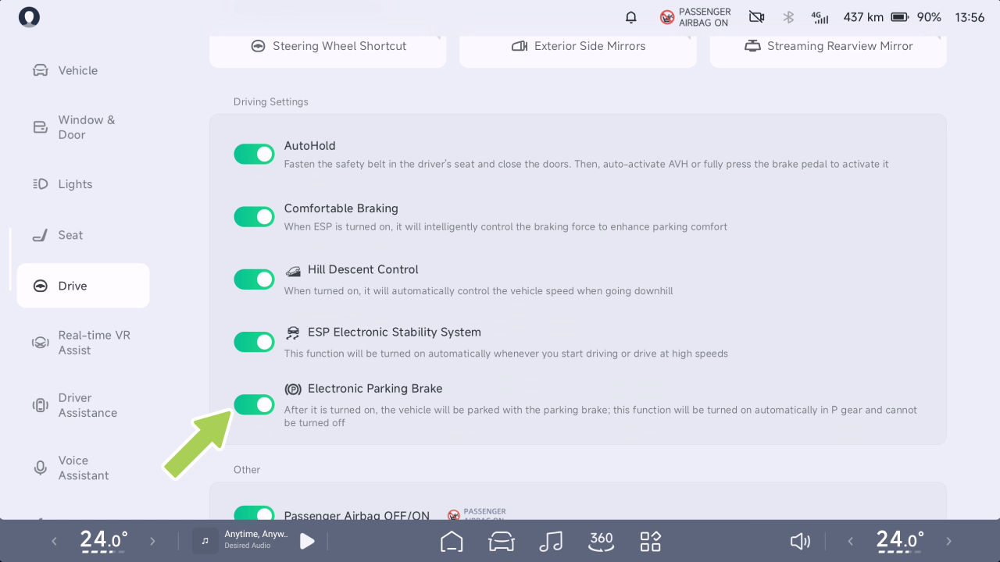
Operación de Conducción
arranque con puente o contactando con el Centro de Servicio de Automóviles XPENG.
frenado, y el pedal de freno se siente como si pateara el pie. En tales casos, es necesario reducir la velocidad del vehículo y minimizar el frenado. Permita que el disco de freno y la placa de fricción se enfríen, y luego realice una operación de recuperación.
• No conduzca el vehículo sin haber desactivado el EPB, ya que es altamente susceptible a sufrir daños.
Los pasos de la operación de recuperación son los siguientes:
Precauciones y limitaciones
1. Bloquee el vehículo y apáguelo. Espere al menos 5 minutos. Durante este tiempo, evite sentarse en el asiento del conductor, pisar el freno, abrir las puertas u operar el vehículo para asegurarse de que entre en modo de reposo completo.
Conducción a través del agua
Después de conducir a través del agua, aplique suavemente el freno para drenar el agua y restaurar el rendimiento del frenado. Evite el frenado de emergencia salvo que sea necesario.
Conducción dinámica
- Desbloquee y encienda el vehículo. Espere al menos 15 segundos antes de abrir la puerta e ingresar al vehículo.
En condiciones de frenado a alta velocidad, continuo y relativamente urgente, la temperatura del disco de freno sube rápidamente, lo que provoca una disminución de la eficiencia del frenado. Para garantizar la seguridad, cuando las pastillas de freno están gravemente desgastadas y la temperatura es excesivamente alta, el sistema Integrated Power Boost (IPB) se degrada. Se iluminan varios testigos (MIL) en el tablero, y un sonido de "clic" proviene del compartimento delantero cuando
- Presione a fondo el pedal de freno con fuerza (aplicando la máxima presión contra el respaldo del asiento) y manténgalo así durante al menos 20 segundos.
precaución
El sistema de frenos del G6 no está diseñado para circuito; si un usuario individual conduce de forma exigente o busca mejorar el tiempo de vuelta en el circuito, se le solicita al usuario que
Operación de conducción
reemplace las pastillas de alta temperatura y enfríe los discos cuando corresponda.
• Confort: La respuesta de potencia es moderada, equilibrando la autonomía y el rendimiento.
Modos de conducción
• Sport: La respuesta de potencia es ágil, brindando un placer de conducción excepcional.
Operación
• Individual: El usuario puede ajustar múltiples parámetros para un placer de conducción personalizado.
• Modo Slip-Start: La respuesta de potencia es suave, proporcionando el máximo par para mejorar el rendimiento en todo tipo de terreno.
Solo en el modo "Sport" se mostrará el interruptor de "Launch".
El modo Launch está activo únicamente durante el ciclo de apagado actual. Si se desactiva Launch o el vehículo se vuelve a encender, el modo Launch se desactivará.
En la pantalla de control central, vaya a la interfaz " →Conducción", y podrá seleccionar el modo de conducción según sus preferencias.
Regeneración
Introducción
• ECO: La respuesta de potencia es gradual, facilitando una mayor autonomía de conducción.
Cuando el vehículo se desplaza por inercia o frena, la función de regeneración puede convertir parte de la


Operación de conducción
energía cinética en energía eléctrica para cargar la batería de tracción y aumentar la autonomía de conducción.
• SOC de la batería de tracción.
• Temperatura de la batería de tracción.
Operación
- El nivel de regeneración seleccionado.
Precauciones y limitaciones
• Los diferentes niveles de recuperación de energía corresponden a diferentes experiencias de conducción.
Consejos
• Si la Frenada por Recuperación de Energía reduce significativamente la velocidad del vehículo (por ejemplo, al conducir en una pendiente pronunciada), la luz de freno se enciende para advertir al conductor del vehículo que va detrás que usted está reduciendo la velocidad.
En la pantalla de control central, vaya a la interfaz “ →Conducción”, donde puede configurar la “Regeneración”.
• La recuperación de energía no es posible cuando la carga de la batería es del 100%; la recuperación de energía se reduce cuando la batería está en un estado de carga elevado.
La cantidad de energía suministrada a la batería de tracción mediante la regeneración depende de los siguientes factores:
Factores que afectan la regeneración
Consejos
En tramos de bajada largos, intente utilizar el frenado intermitente y el modo de detención o una regeneración alta
1. Estado actual de la batería de tracción.

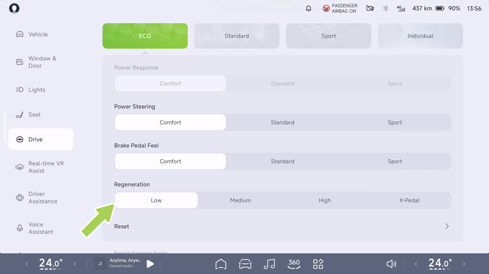
Operación de Conducción
para evitar la atenuación de la eficiencia de frenado provocada por el frenado continuo.
En la pantalla de control central, vaya a la interfaz “ →Conducción”. En “Dirección Asistida”, puede seleccionar “Confort, Estándar o Deportivo”.
advertencia
El efecto de frenado producido por la recuperación de energía no es suficiente para una conducción segura y el conductor debe aplicar los frenos del vehículo de manera oportuna, según corresponda.
• Confort: La fuerza de dirección es la mínima y se recomienda para una conducción confortable.
• Estándar: La fuerza de dirección es moderada y se recomienda para la conducción general.
Dirección asistida
• Deportivo: La fuerza de dirección es relativamente pesada y se recomienda para una conducción deportiva.
Operación
advertencia
• No ajuste la posición del volante mientras conduce el vehículo.
• Un ajuste incorrecto de la posición del volante puede causar lesiones personales; mantenga al menos 25 cm de distancia entre el volante y el pecho del conductor.
Uso de cadenas antideslizantes
Introducción
Al conducir en entornos severos como caminos nevados o helados en invierno, se pueden utilizar cadenas para neumáticos para

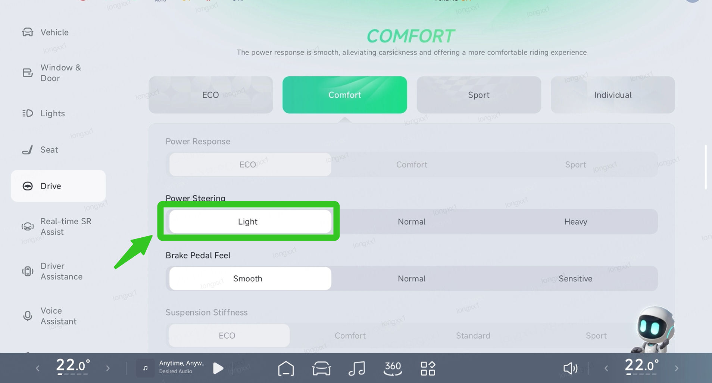
Operación de Conducción
aumentar la fricción de los neumáticos y reducir el deslizamiento lateral. Para usar cadenas para neumáticos, se deben seguir las siguientes sugerencias:
condición. Durante la conducción, no supere el límite de velocidad especificado para las cadenas para neumáticos o los 50 km/h, lo que sea menor.
• Las cadenas para neumáticos solo se pueden instalar en las ruedas traseras. Las cadenas para neumáticos deben instalarse en pares. No se permiten cadenas para neumáticos autotensoras.
• Es necesario instalar cadenas para neumáticos al conducir sobre nieve profunda. El vehículo no viene equipado con cadenas para neumáticos, las cuales se pueden adquirir según sea necesario. El tamaño y el tipo de cadenas para neumáticos seleccionadas deben ajustarse a las especificaciones de los neumáticos del vehículo.
• No utilice cadenas para neumáticos sobre suelo seco. Retire las cadenas para neumáticos una vez que las superficies de la carretera estén libres de hielo o nieve.
Las dimensiones y especificaciones de las llantas y neumáticos adecuados para instalar cadenas para neumáticos son las siguientes:
• Instale las cadenas para neumáticos lo más cerca posible del neumático y vuelva a apretarlas después de conducir entre 0,5 y 1,0 km.
Tamaño de llanta Especificaciones de neumáticos
• Si el vehículo está equipado con tapacubos de rueda, retírelo antes de instalar las cadenas para neumáticos.
Llanta de 18 pulgadas 235/60 R18
• Si escucha un sonido de fricción o de roce entre las cadenas para neumáticos y el vehículo durante la conducción, detenga el vehículo y vuelva a apretar las cadenas. Si esto no funciona, retire las cadenas para evitar daños al vehículo.
Llanta de 20 pulgadas 255/45 R20
• Instale las cadenas en el neumático para garantizar una conducción equilibrada en todo tipo de clima. Tenga en cuenta que la potencia del vehículo puede ser insuficiente después de instalar las cadenas. Conduzca con cuidado incluso si la carretera está en buen
Operación de Conducción
Luz Alta Inteligente (IHB)
Operación
Introducción
Activación y desactivación
La IHB puede cambiar automáticamente entre luz alta y luz baja según las condiciones de los vehículos que circulan adelante y la iluminación ambiental, para evitar afectar a los participantes del tráfico circundante.
Indicadores en el Tablero
La IHB está habilitada y la luz alta no está encendida.
La IHB está habilitada y la luz alta está encendida.
En la pantalla de control central, vaya a la interfaz “ →Luces→Faros” y podrá activar /desactivar la “Luz Alta Inteligente”.
La IHB tiene una falla.
Uso de la IHB
Cuando se cumplen las siguientes condiciones al mismo tiempo, la IHB se activa y el vehículo cambia automáticamente entre luz alta y luz baja según el entorno de la carretera:


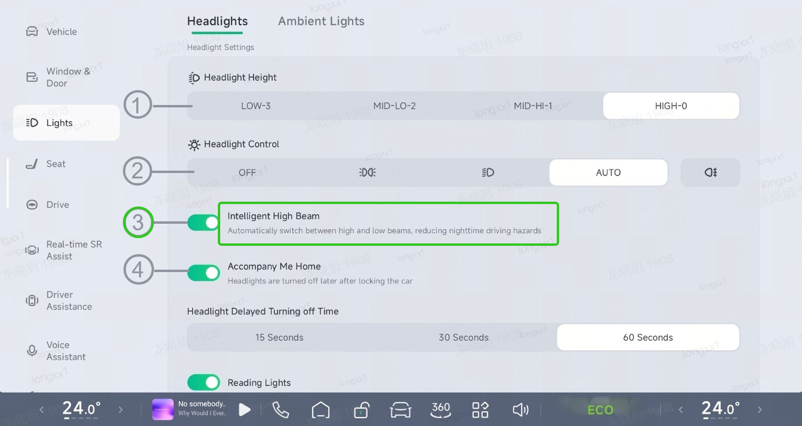
Operación de Conducción
1. El interruptor de luces de la pantalla de control central está en posición automática o de luz baja.
Ajuste de la Posición del Volante
- La velocidad del vehículo es mayor a 30 km/h.
Introducción
Cuando la IHB está activa, la IHB se desactivará si la velocidad del vehículo es menor a 15 km/h.
Consejos
Antes de conducir, ajuste la altura del volante y su distancia respecto a su cuerpo para garantizar un agarre cómodo y una postura de conducción óptima.
Operación
Advertencias, Precauciones y Limitaciones
Ajuste de la Posición del Volante
La IHB puede no funcionar correctamente en los siguientes casos:
advertencia
Las advertencias, precauciones y limitaciones anteriores no cubren todas las condiciones que pueden afectar el funcionamiento normal de la IHB.
• Cámara restringida
1. Ajuste a una posición de conducción adecuada.
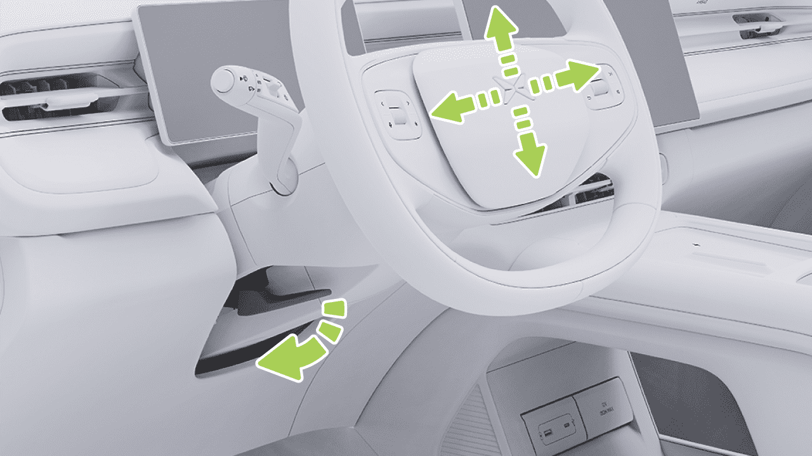
Operación de Conducción
- Cuando el vehículo esté detenido, tire hacia abajo de la palanca del volante para desbloquear el volante.
pueden producirse lesiones o la muerte y daños materiales.
- Mueva el volante vertical y horizontalmente hasta una posición adecuada.
• No ajuste el volante mientras conduce.
Espejo Retrovisor Interior Antideslumbrante Manual
Asegúrese de que la pantalla del grupo de instrumentos y las luces indicadoras del tablero sean visibles.
precaución
Introducción
- Tire de la palanca del volante hacia arriba para bloquear el volante.
El ajuste manual del espejo retrovisor interior antideslumbrante puede minimizar el reflejo de las luces de atrás, optimizando la vista trasera.
Consejos
Después de ajustar la posición del volante, intente mover el volante hacia arriba y abajo, hacia adelante y hacia atrás para asegurarse de que el volante esté bloqueado firmemente en su lugar.
Advertencias, precauciones y limitaciones
• Después de ajustar la posición del volante, verifique que el volante esté bloqueado,
advertencia
Operación de conducción
Operación
Ajustar el ángulo del espejo retrovisor
• Cuando la pestaña está en el ángulo normal de visión trasera, tirar de ella hacia adelante desviará los reflejos de las luces traseras, logrando un efecto antideslumbrante.
• Luego tire de la pestaña hacia atrás para volver al ángulo normal de visión trasera.
1. Ajuste el asiento del conductor a una posición adecuada.
- Sujete el espejo retrovisor interior y ajuste su ángulo hacia arriba y abajo, izquierda y derecha, hasta que pueda ver correctamente la parte trasera del vehículo a través de él.
Consejos
Se recomienda utilizar ambas manos al ajustar el ángulo de la lente del espejo interior.
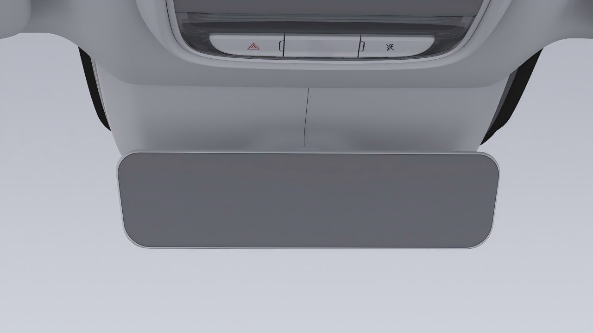
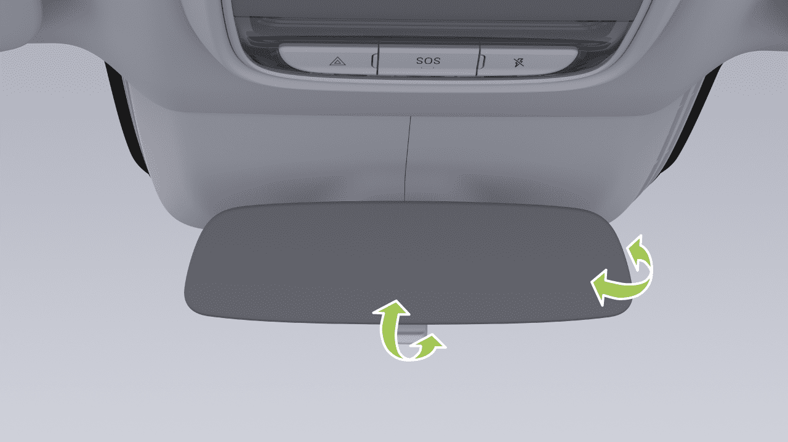
Operación de conducción
Espejo retrovisor de streaming*
- Interruptor del espejo retrovisor de streaming
Introducción
Para garantizar un ajuste adecuado del brillo:
precaución
El espejo retrovisor de streaming puede funcionar como un espejo común y como una pantalla de visualización. Cuando se cambia al modo de streaming, la cámara en la parte trasera del vehículo captura imágenes del área detrás del vehículo para mostrarlas, manteniendo una buena visión incluso durante el día, la noche y en condiciones climáticas adversas como lluvia, nieve y escarcha.
• No obstruya ni cubra la unidad fotoconductora trasera.
• Mantenga limpia la unidad fotoconductora trasera.
Consejos
Mantenga limpia la cámara de visión trasera y elimine cualquier suciedad.
1. Elemento fotosensible trasero
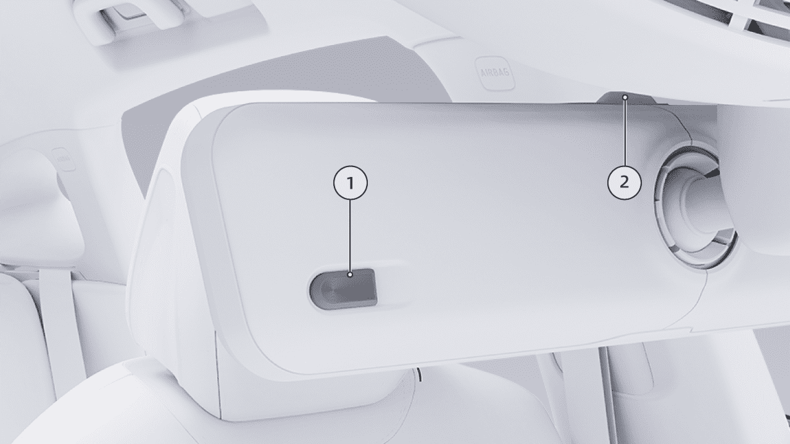
Operación de conducción
Operación
Encender o apagar el espejo retrovisor de streaming
Ajustar el ángulo del espejo retrovisor
Presione este botón para cambiar del modo de streaming al modo de espejo común. Presione el botón nuevamente para cambiar al modo de streaming.
1. Ajuste el asiento del conductor a una posición adecuada.
- Sujete el espejo retrovisor interior y ajuste su ángulo hacia arriba y abajo, izquierda y derecha, hasta que pueda ver correctamente la parte trasera del vehículo a través de él.
• Después de cada encendido, el espejo retrovisor de streaming volverá al estado de la última memoria.
• En la pantalla de control central, también puede ir a la interfaz “ →Conducción→Espejo retrovisor de streaming” para habilitar o deshabilitar la función del espejo retrovisor de streaming.
Se recomienda utilizar ambas manos al ajustar el ángulo de la lente del espejo interior.
Consejos

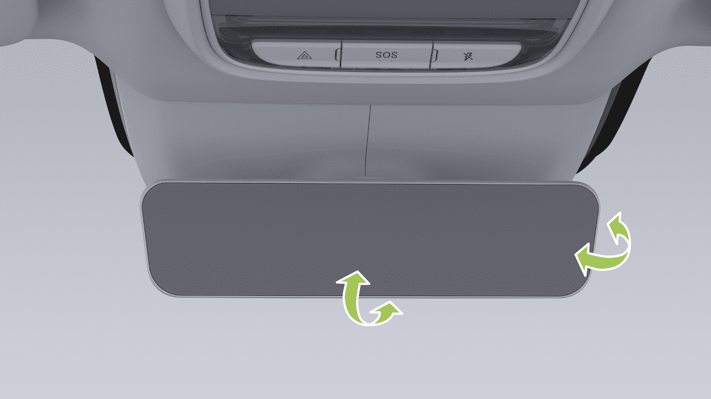
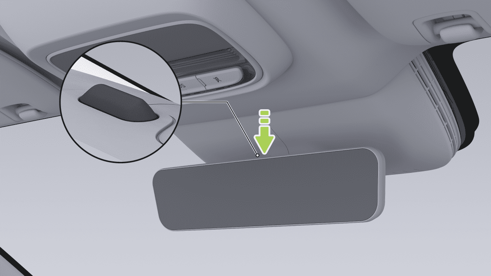
Operación de conducción
• Después de cambiar al modo de espejo normal, ajuste manualmente el ángulo del espejo lateral interior para lograr una observación retrovisora óptima.
• En la pantalla de control central, toque “ →Conducción→Espejo retrovisor de streaming”.
Encender o apagar el espejo retrovisor de streaming
Interfaz de configuración de la pantalla de control central
En la pantalla de control central, ve a la interfaz “ →Conducción→Espejo Retrovisor de Transmisión”. Después de activar la función de Espejo Retrovisor de Transmisión, cámbialo al modo de transmisión multimedia. Cuando esta función está desactivada, cambia al modo de espejo normal.
Ajuste del campo de visión
El campo de visión se ajusta modificando el ángulo de captura de la cámara para establecer el ángulo de visualización del espejo retrovisor de transmisión según los hábitos del conductor, ayudando así al conductor a observar las condiciones de la vía por detrás.
Abre la interfaz de ajuste del Espejo Retrovisor de Transmisión por cualquiera de los siguientes medios:
Ajuste manual del campo de visión
• Voz de Xpeng.
• Barra de tareas inferior (si está configurada) de la pantalla de control central.
En la pantalla de control central, ve a la interfaz “ →Conducción→Espejo Retrovisor de Transmisión”. Usa la rueda de desplazamiento izquierda para acercar o alejar la imagen, y

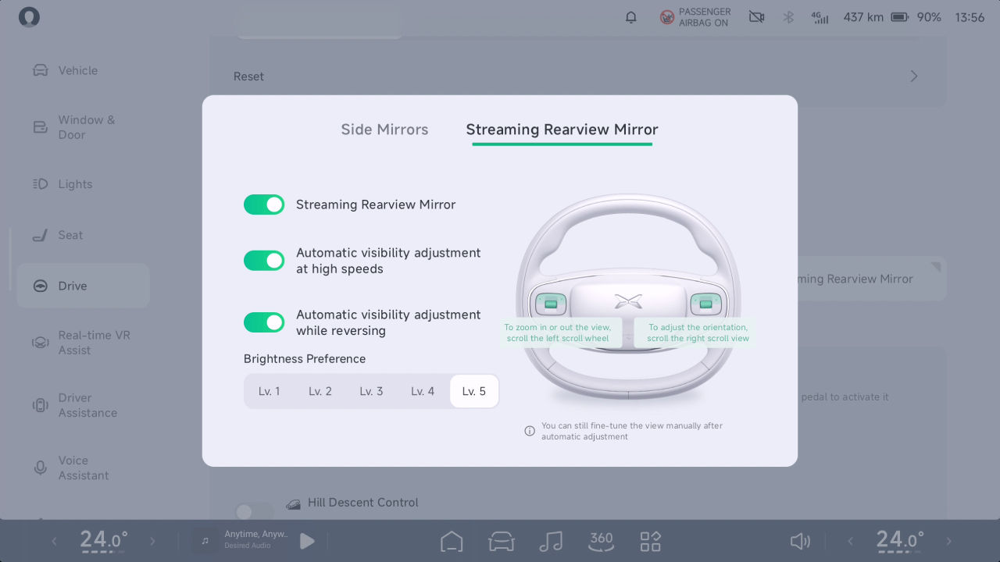
Operación de Conducción
la rueda de desplazamiento derecha para mover el campo de visión hacia arriba y hacia abajo.
o por debajo de 60 km/h durante más de 10 segundos, el Espejo Retrovisor de Transmisión restaurará su campo de visión previo al ajuste bajo el ajuste automático de visión.
Ajuste automático de la visión durante el retroceso
En la pantalla de control central, ve a la interfaz “ →Conducción→Espejo Retrovisor de Transmisión”. Si está activado el ajuste automático del campo de visión durante el retroceso, el Espejo Retrovisor de Transmisión ajustará automáticamente el campo de visión cuando el vehículo esté en la marcha R. Después de cambiar de la marcha R, la visión del Espejo Retrovisor de Transmisión restaurará la configuración previa al ajuste automático.
Consejos
Cuando el ajuste automático del campo de visión está activado, la posición del campo de visión aún puede ajustarse manualmente.
En la pantalla de control central, ve a la interfaz “ →Conducción→Espejo Retrovisor de Transmisión”. En “Preferencia de Brillo”, puedes seleccionar “Nivel 1, Nivel 2, Nivel 3, Nivel 4 o Nivel 5”. En cada nivel de brillo, se realizará un cierto rango de ajuste automático en función de la luz ambiental.
Regulación del brillo de la pantalla
Ajuste automático de la visión a alta velocidad
En la pantalla de control central, ve a la interfaz “ →Conducción→Espejo Retrovisor de Transmisión”. Después de activar la función de ajuste automático del campo de visión para altas velocidades, si el vehículo está en la marcha D y circula a velocidades superiores a 80 km/h durante más de 10 segundos, el Espejo Retrovisor de Transmisión ajustará automáticamente el campo de visión. Si la palanca de cambios se cambia a una posición distinta de D o la velocidad del vehículo se mantiene en
Advertencias, Precauciones y Limitaciones
advertencia
• El espejo retrovisor interior de transmisión es solo una ayuda y no sustituye el criterio del conductor sobre el mundo exterior.

Operación de Conducción
No confíes únicamente en los espejos interiores al conducir o estacionar; en todas las circunstancias, el conductor es responsable de la seguridad del vehículo y debe estar siempre atento a su entorno.
obstrucción del campo de visión, por lo que el conductor debe observar y conducir con precaución.
• Cuando falten píxeles en la visualización en streaming, o la imagen sea anormal de forma parcial o total, cambie al uso del espejo reflectante normal y comuníquese a tiempo con el Centro de Servicio de XPENG Automobile para su reparación.
• No instale ningún objeto alrededor del espejo retrovisor interior para evitar que se obstruya la observación de la carretera por parte del conductor.
• No rocíe la cámara al lavar el vehículo con una pistola de agua a alta presión, ya que esto puede provocar un mal funcionamiento del sistema debido a la entrada de agua en la cámara.
• No ajuste el espejo retrovisor interior en streaming mientras el vehículo está en movimiento, ya que pueden producirse lesiones, muerte y daños materiales.
• Cuando la parte trasera esté dañada, es posible que la cámara no pueda obtener una imagen precisa; se recomienda cambiar al espejo reflectante.
No utilice el espejo retrovisor interior en streaming en los siguientes casos:
• Cámara restringida
• Condiciones meteorológicas adversas (por ejemplo, lluvia intensa, nevadas intensas, niebla densa, etc.).
• Verifique la posición del espejo interior antes de conducir y ajústela si es necesario.
• En entornos oscuros, como durante la noche o en túneles, la luz trasera mostrada en la pantalla presentará cierta cantidad de dispersión y halo, lo que genera una leve
precaución